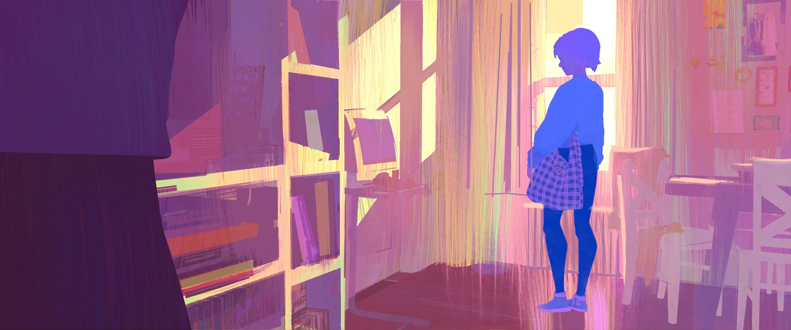

I was born in 2008 in La Jolla, California, and I have lived in San Diego my entire life. Although my nationality is American, I am ethnically Chinese and I have roots from Shanghai, and I travel there every other summer. I am part of a family of four, which include my mom, dad, and my brother who is currently an undergraduate student at UC Berkeley. I also have a pet fantail goldfish named Tweedle who I got during freshman year. I went to Solana Pacific for Elementary School, Carmel Valley Middle School for Middle School, and I am currently a senior at Canyon Crest Academy for high school.
I spent a lot of time drawing and painting the life around me, and I especially enjoy going to cafes and parks to draw scenery and people, since it is a good experience to get to know others.In addition, I like to paint portraits of my family and friends, and often give them as gifts. I also crochet amigurumi stuffed animals and I like to make fruits for them. Aside from art, I love collecting pokemon cards and have a collection of over one hundred. My most prized cards are the exclusive Diancie and Emolga EX edition. Moreover, I ride my bike to beaches to exercise and enjoy the ocean breeze during the weekends.

In the future, I hope to pursue a career in visual development for movies and games. I aspire to be like my favorite artist Kat Tsai, who illustrates scenes for animations like Spider Man: Across The Spider Verse. I would also like to create 2-dimensional animations for Metroidvania games like Hollow Knight, and have since created character designs during my free time. Therefore, I plan to pursue a major in 2D and 3D Design for my undergraduate degree with a minor in Psychology. Because I am also interested in learning about how I can positively impact others when they view my art, I would love to learn human-computer interaction and design user-friendly interfaces and graphics. Aside from my career, one of my goals is to master digital and film photography and create a series of landscapes, such as Mount Fuji.